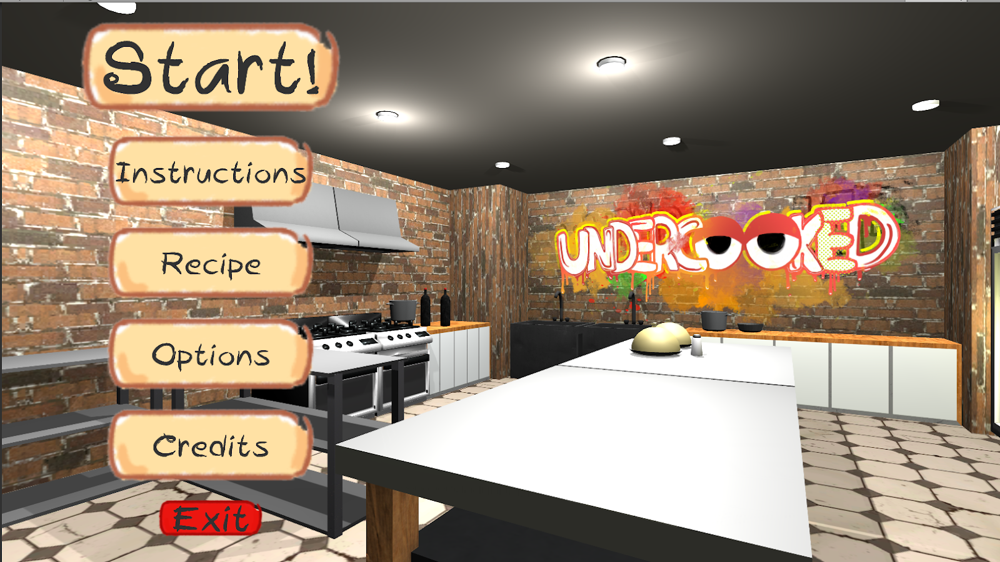
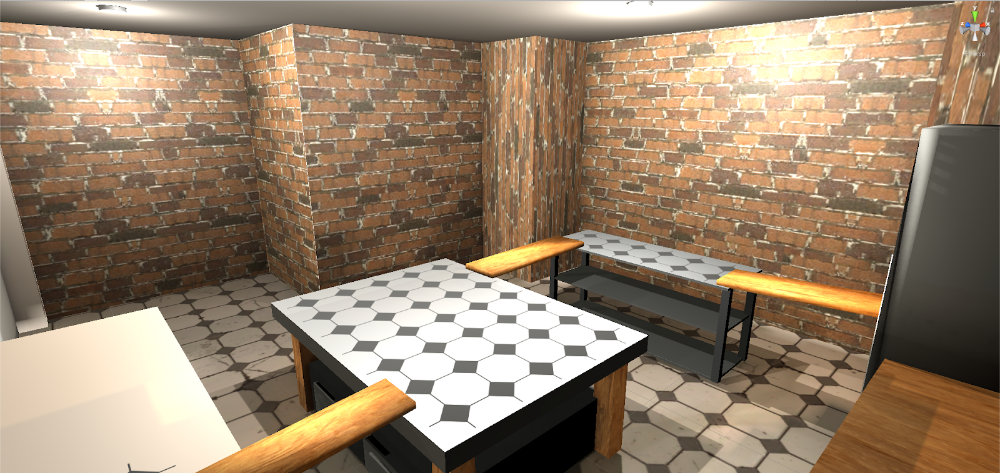

Undercooked
A kitchen-themed tower defence game where players shape enemy routes through strategic turret placement.
About the Game
Undercooked is a kitchen-themed tower defence game where players defend their base against waves of incoming enemies by strategically placing defensive turrets.
Players can influence enemy movement by using turrets as obstacles, creating their own defensive pathways while ensuring enemies can still reach the base.
The game also features unique towers with different abilities, a tower merging and upgrade system, and collectible currency scattered throughout the kitchen.
My Role
I served as the team leader of a seven-person development team consisting of four programmers and three artists over a six-month development period.
Alongside team leadership, I contributed to gameplay programming and game design, with particular emphasis on dynamic enemy pathfinding and strategic turret placement.
Team Leadership
Led a team of seven members throughout the development of Undercooked, coordinating between programmers and artists.
Dynamic Enemy Pathfinding
Conceived and implemented the game's dynamic pathfinding mechanic, allowing enemy navigation routes to respond in real time to turret placement.
Designed the system around the concept of turrets functioning as both defensive structures and physical obstacles, introducing an additional layer of strategy through player-controlled enemy routing.
Turret Placement Validation
Implemented placement validation to ensure that at least one valid route remains between the enemy spawn and the player's base.
Players receive immediate feedback through a holographic turret preview. When a placement would completely obstruct enemy navigation, the hologram turns red and the placement is rejected.
Turret Upgrade System Concept
Proposed the original upgradeable turret mechanic to provide players with additional strategic options beyond initial turret placement.
My teammates subsequently expanded this concept into a three-branch upgrade system during development, demonstrating how an initial design idea evolved through team collaboration.
Gameplay
Undercooked combines traditional tower defence mechanics with player-controlled path creation. Players place turrets to attack incoming enemies while simultaneously influencing the routes those enemies take.
Different towers provide different abilities, encouraging players to experiment with their defensive layouts.
Towers can also be merged and upgraded to increase their effectiveness, giving players additional options for strengthening their defences.
Collectible currency found around the kitchen provides additional gold to support the player's defensive strategy.
Gameplay Trailer
Watch the official Undercooked gameplay trailer showcasing the game's tower defence mechanics, turret merging, and strategic path creation.
Gameplay Screenshots

Undercooked's main menu.

A view of the kitchen environment.
Project Details
Play Undercooked
Download Undercooked from itch.io, or watch the gameplay trailer on Vimeo.
Download on itch.io Watch on Vimeo